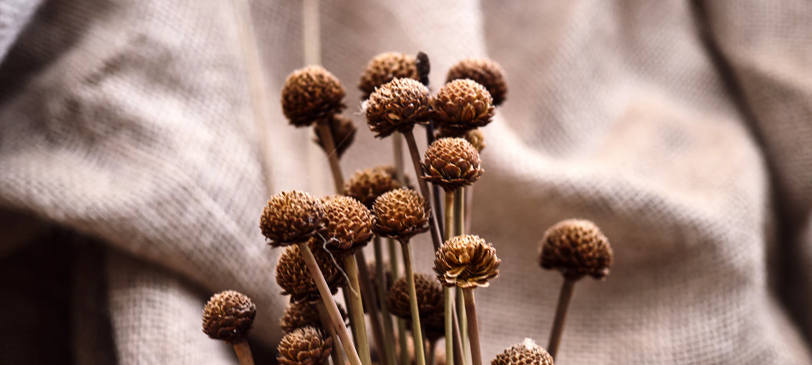
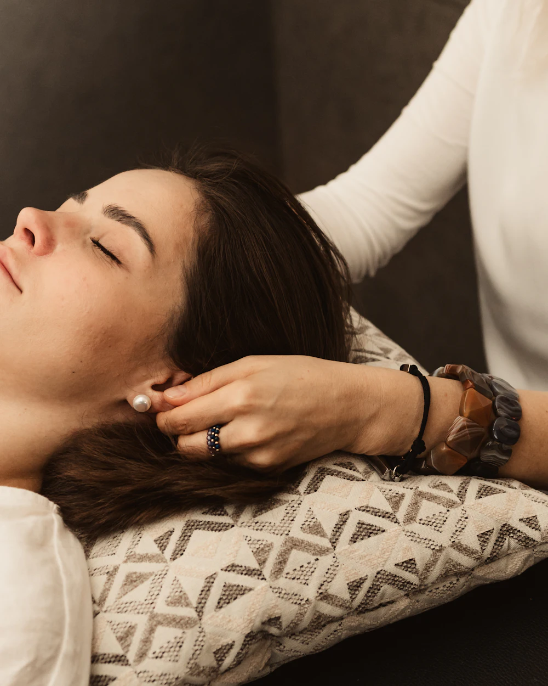
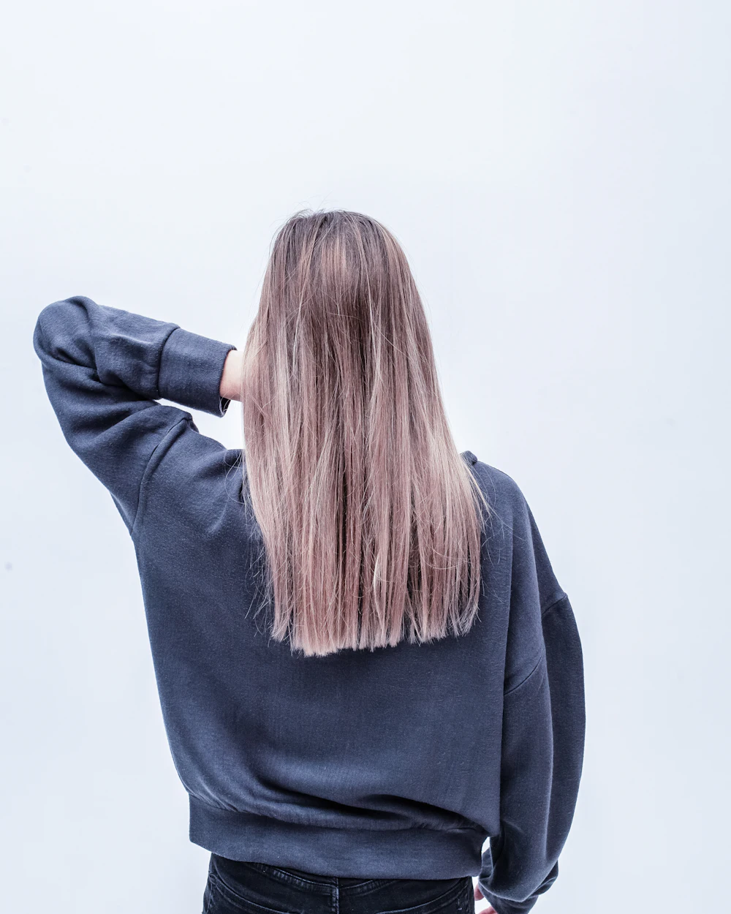
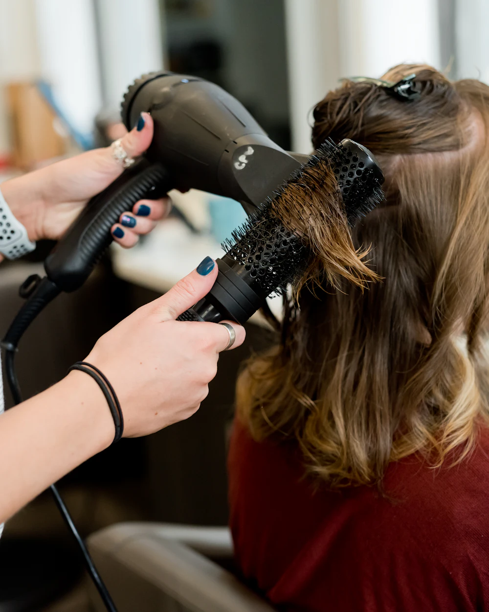

Servicios
Salud capilar, tratamientos y peluquería. Todo empieza por escucharte y mirar tu cuero cabelludo.

Salud capilar
El corazón de Aura: cuidar el cabello desde la raíz.
-
Consulta tricológica
Analizamos tu cuero cabelludo con microcámara para ver qué pasa de verdad: grasa, caspa, sensibilidad o caída. Sales con un diagnóstico claro y un plan pensado para ti.
-
Spa capilar
Limpieza profunda, exfoliación suave, masaje y mascarilla en un ritual para desconectar. Tu cuero cabelludo respira y tu pelo lo nota desde el primer día.
-
Terapias capilares
Tratamientos específicos para la caída, el exceso de grasa, la caspa o la sensibilidad, con activos naturales y sesiones de seguimiento.
-
Barros naturales
Arcillas y barros que depuran, calman y equilibran el cuero cabelludo. Ideales para pelo graso o con tendencia a la caspa.

Tratamientos
Para que tu pelo recupere suavidad, brillo y fuerza.
-
Alisados
Alisados que respetan la fibra y dejan el pelo suave, brillante y fácil de peinar durante semanas.
-
Hidratación y reparación
Recupera la hidratación y la fuerza del pelo seco, dañado o castigado por el tinte y el calor.

Peluquería
Cortes y peinados con el mismo mimo que todo lo demás.
-
Corte y peinado
Un corte que tiene en cuenta tu tipo de pelo, tu día a día y cómo te gusta llevarlo.
-
Peinados y recogidos
Ondas, recogidos y peinados para bodas, eventos o para sentirte especial un día cualquiera.
¿Cómo es una consulta tricológica?
-
Diagnóstico con microcámara
Vemos tu cuero cabelludo ampliado en pantalla y te explico lo que encontramos.
-
Plan personalizado
Elegimos el tratamiento en cabina y los productos para casa según lo que necesita tu piel.
-
Seguimiento
Revisamos cómo evoluciona y ajustamos el plan hasta ver resultados.